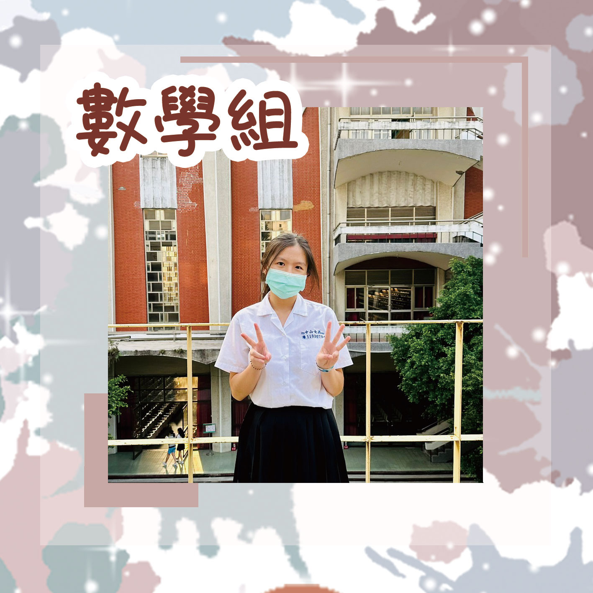
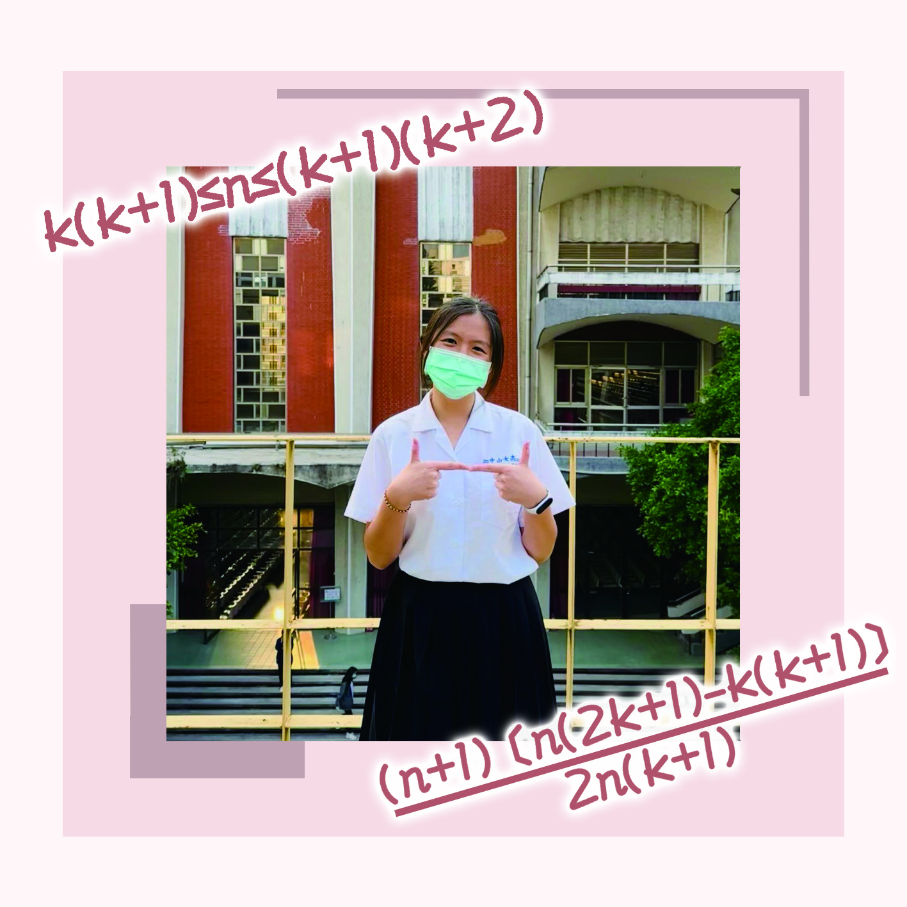
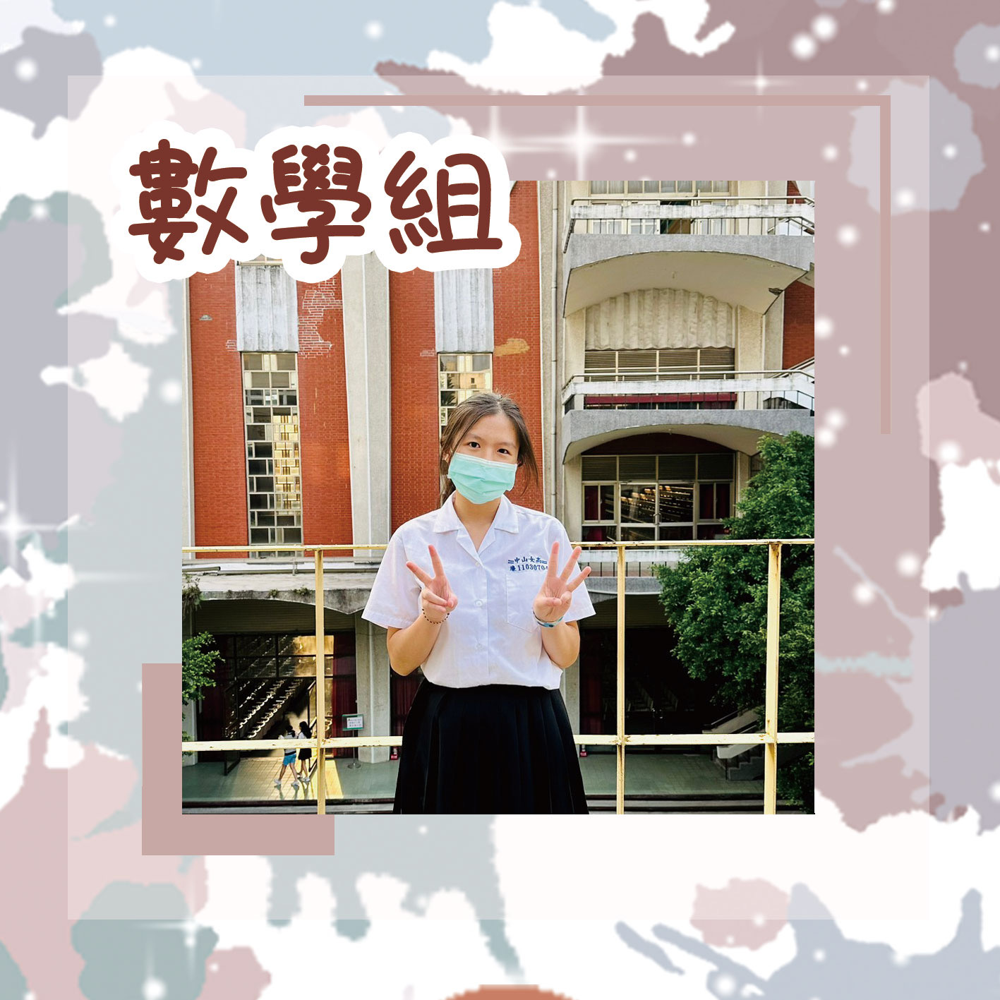
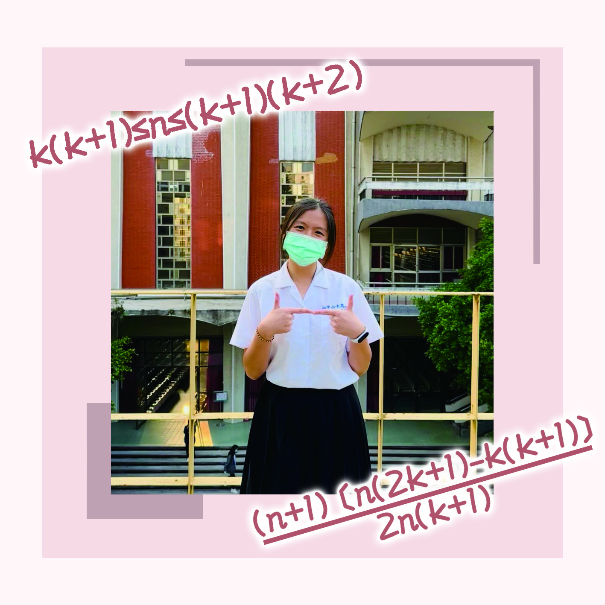

組員：柯姸安
對就是孤 當其他組都在討論要選誰當組長、討論專題內容的時候，數學組可以幹嘛呢？可以節省選組長的時間 節省跟組員約做專題的時間 還可以額外得到一個人跟兩個老師討論專題的機會！
你以為只有數學組一個人東西就都會弄不完嗎？沒有！大錯特錯 其他組在科展截止前還要拼盡全力趕報告、請公假趕報告、上課趕報告，數學組總是數一數二到設備組交報告的！（畢竟都不用和組員討論也不用約時間打報告👉👈😞）嗯？什麼進度問題？完全沒有😀
字面上的意思，即使只有一個人還是選數學組的姸安熱愛數學且數學超強，我烤焦了
無時無刻都在做報告，連出去比賽也帶著電腦，早上打球晚上做報告，寒訓暑訓也都在快死掉的狀態，這個精神可以說是讓隊友們都非常敬佩，並伸出「非常有用！！」的援手助沿岸一臂之力🥹😚
承上題，比賽時還要打報告，到好晚都還沒睡，當衣服洗好時，大家幾乎都睡著了，賢慧有友愛同學的安安做報告之餘（沒 根本就沒有餘 還幫大家曬好衣服🥹多麼感人的友情，為了投以回報大家都非常踴躍的說：我們可以幫你打報告！！就是寫的怎麼樣就不知道了（小小聲…
居家=科研案，居家，就很居家，帶著眼鏡然後穿著著寬鬆的衣服，再綁個包包頭，就只差在頭上插一隻筆了！！（可惜據本人表示：！！如果我會插我也想！！ 但不用擔心，絕對不是衣服的問題，因為就算穿運動服也很居家，好啦老師都說要把學校當自己家😚
居家的主因找到了，那究竟是個怎麼居家法呢～～哈哈哈！！在後櫃放著衣服襪子夠居家了吧，唉唉只差放個吹風機就完美了😌
新學的技能！！還人非常好的表演給大家看，唉唉唉不虧是上下舖的常客、二樓的居民，期待之後能解鎖更多關於上下舖的心得😎